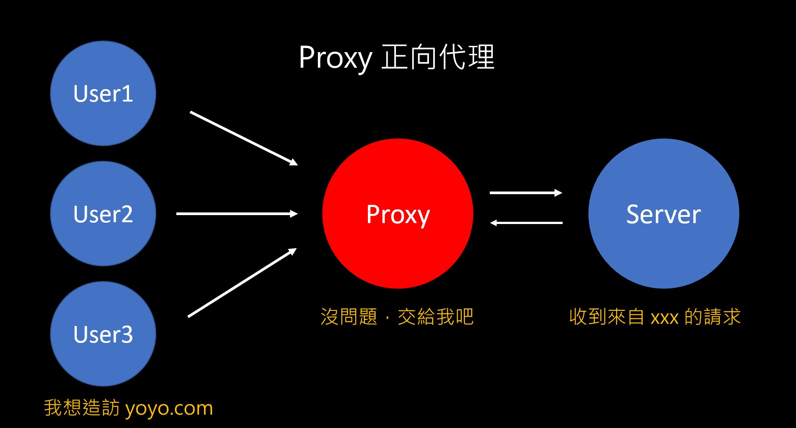
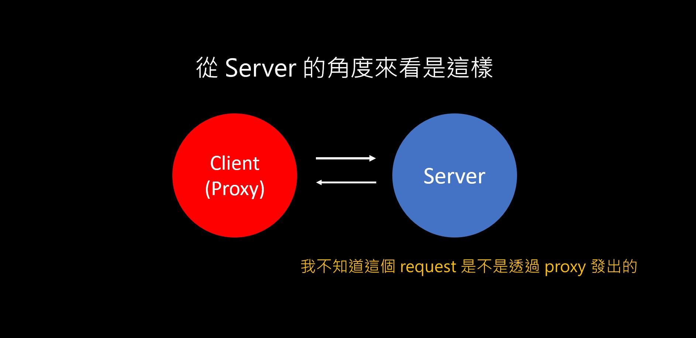
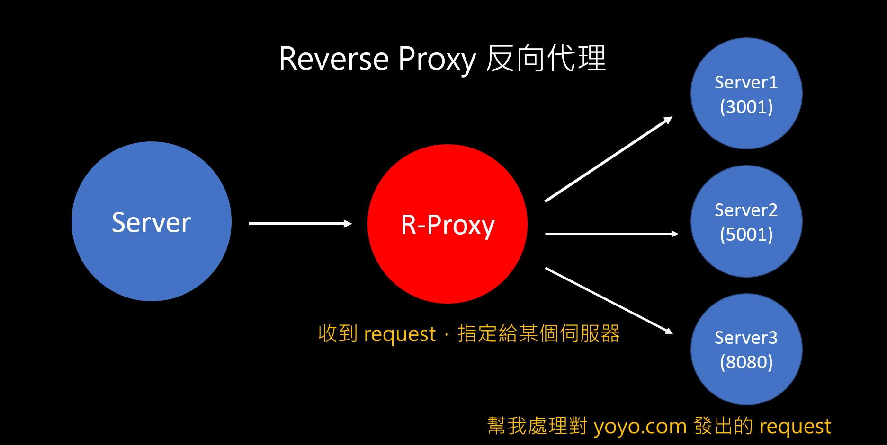
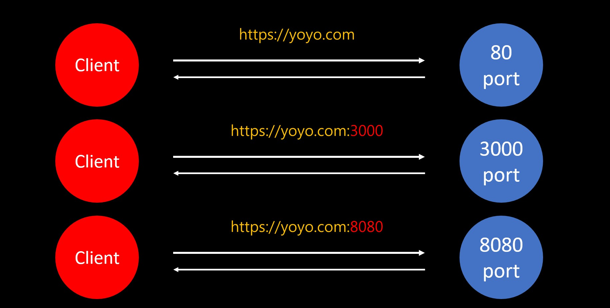
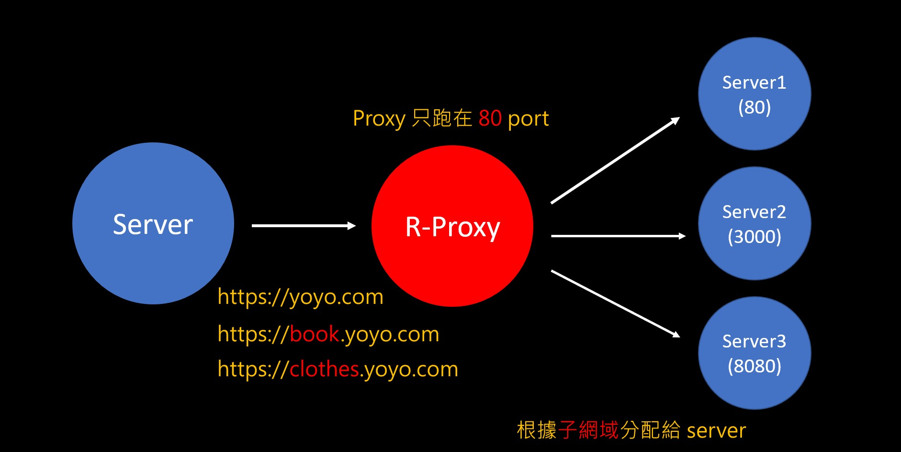
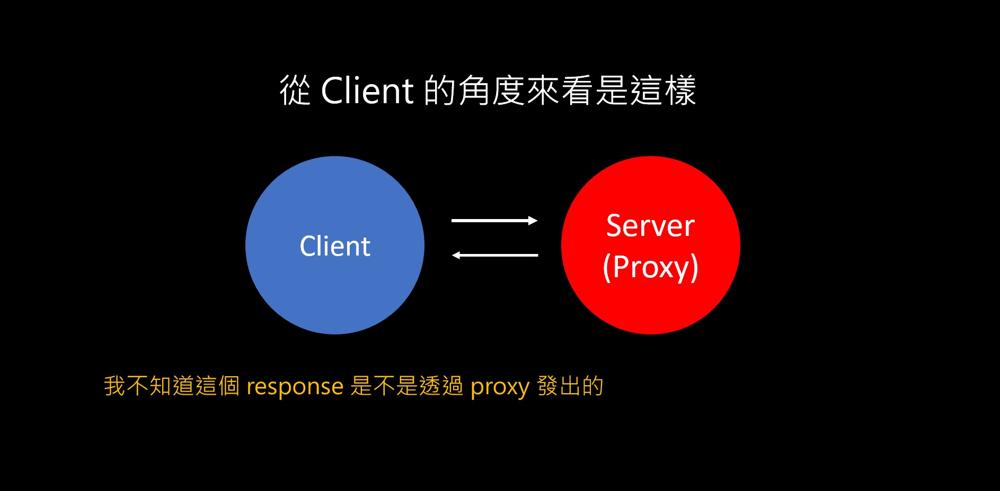

一個很人性化的設計。
正向代理
其實不複雜，只要你能理解正向代理的意思，那反向代理馬上就能懂，因為真的只是「反過來」而已。
先來看一下什麼是正向代理：

簡單來說，有些時候你想造訪的網站會「擋 IP」，例如一些中國的網站，只要你不是用中國 IP 連的話都會被擋，沒辦法連上去。
這個時候就可以透過「Proxy」來幫你處理這個問題，他的流程就跟上面的圖一樣：
- 從 client 發一個 request 到 proxy
- proxy 再根據內容對 server 發出 request
- server 看到 proxy 以為是中國的 IP，就把 response 回傳給 proxy
- proxy 再把拿到的東西傳回給 client
你可能會想說「那 server 不會知道是 proxy 發過來的嗎？」，這時候換位思考的重要性就來了：

剛剛第一張圖是從 client 的角度來看，所以你當然會知道「我是透過 proxy 來發 request」的這件事。可是對 server 來說不是這樣，它只會知道有人發了一個 request 過來，但是不是透過 proxy？它基本上不會知道（還是有一些特例啦），而且也不會知道是哪個 client 發過來的（這個很重要很重要）。
所以呢，這就是為什麼 proxy 可以運作的原理。
用 proxy 的好處
從上面例子來看會發現兩個好處：
- 加強隱私：client 可以把自己的資訊隱藏不讓 server 知道
- 解除限制：就算會擋 IP 的網站我還是可以連上去
除了這兩個以外，proxy 還有另外一個好處是「Cache 機制」。
在有些情況下，proxy 可以把很常出現的 request 給 cache 起來，當下次有人再發同樣的 request 時，直接把 cache 的東西回傳就好，不用再特地對 server 發一次 request。
反向代理
上面有聽懂的話這個就好講了，跟剛剛幾乎一樣，只是身分對調過來而已：

既然 client 可以透過 proxy 來發 request，那 server 也同理，可以透過 proxy 來處理 request。
你可能會想說「確實如此，不過這要幹嘛阿？」
要知道原因就得先了解一些網路基礎概念。
首先當我們架了一台 server 跑 HTTP 服務時，通常會讓它跑在 80 port（端口），聽起來蠻合理的。可是其實有個問題，假設 server 也有其他服務要跑的話，就得再加開其他的 port 來跑，畢竟你不可能為了加開一項服務再去買一台主機吧（錢太多可以分我 QQ）。
總而言之，這樣做的問題是「網址會變得很難看」：

附註：預設是跑 80 port，所以第一個才不用加上 :80
簡單來說，你應該從來不會用什麼 https:facebook.com:3001 或 https://google.com:8001 來連到 FB 或 Google 吧？我說的很醜就是這個意思，搞不好你連 port 是什麼東西都不知道，怎麼可能還指望你來我的網站時還要加上端口號？
但這時候有 proxy 就不一樣了，這個技巧是「80 port 拿來跑 proxy，proxy 在透過子網域來判斷要把 request 交給哪個 server」

這樣子做以後，就不用在輸入端口號這麼麻煩了，因為 proxy 都幫你設定好了。這也是為什麼有些人會推薦用 Nginx 來架伺服器的原因，因為 Nginx 有提供 prxoy 的功能，而 Apache 沒有。
不過還是要注意剛剛提到的換位思考：

對 client 而言也一樣，它不會知道發出去的 request 是真的 server 還是 proxy，這點很重要。